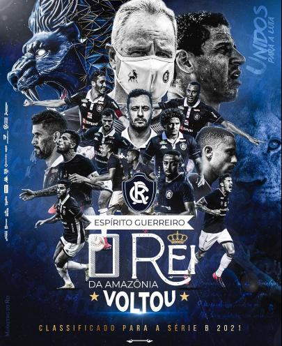
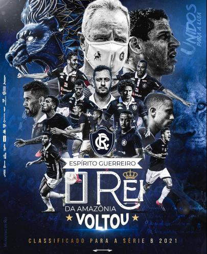

Clube do Remo
Clube do RemoSobre o Clube
O Remo é chamado popularmente de Leão Azul, apelido que faz referência à mascote e à cor oficial da agremiação, o azul-marinho. É proprietário do Baenão e também manda seus jogos no Mangueirão. Seu maior adversário é o Paysandu, cujo clássico Re-Pa é tido como uma das maiores rivalidades do futebol brasileiro, disputando também o Clássico Re-Tu, contra a Tuna Luso.
Entre as equipes do Norte brasileiro é uma das mais populares, apresentando uma das maiores torcida da região. Em 2005, foi recordista de público entre todas as séries do Campeonato Brasileiro de Futebol com uma média de 30.869 torcedores por jogo. O Remo frequentemente aparece entre as maiores médias de público do Brasil. No futebol profissional o Remo possui inúmeras conquistas oficiais, evidenciando 46 títulos estaduais e um Campeonato Brasileiro da Série C. Dentro do estado, o Leão detém feitos únicos como o heptacampeonato de 1913 a 1919, a histórica hegemonia na Década de 1990 (oito títulos em dez anos, incluindo-se um penta) e o título profissional com 100% de aproveitamento em 2004. Fonte:wikipedia

 
